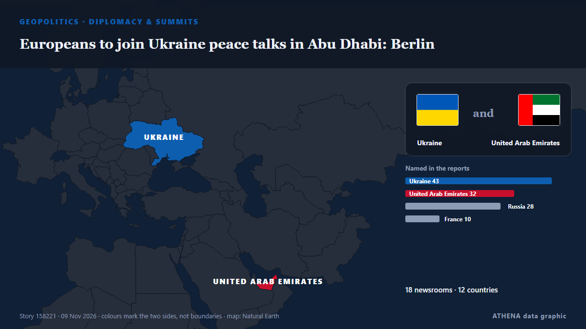

Europeans to join Ukraine peace talks in Abu Dhabi: Berlin

Lavrov says Abu Dhabi talks will address principles for a Russia-Ukraine peace deal, as top advisers from Germany, France and the UK attend to represent Ukrainian and European security interests. de TRT World
Relayé de façon indépendante par 26 médias dans 15 pays depuis le 8 nov. ; premier à l'annoncer : Egypt Independent ; la couverture faiblit. ATHENA juge le risque accru (4.3/10), surtout en raison de la gravité des dommages décrits et de sa portée géographique et sectorielle. La confiance est de 93 % (élevée) : 26 médias indépendants le confirment, avec une fiabilité moyenne des sources de 78 %. Médias par pays : Azerbaïdjan (7), Turquie (6), Russie (5). Couverture : du 8 nov. au 9 nov., 33 heures.
Pourquoi c'est important: L'invasion à grande échelle de l'Ukraine par la Russie a commencé en février 2022. Ce suivi couvre les combats, les frappes sur les infrastructures et la diplomatie autour de la guerre, selon la presse du monde entier.
Ce qui a changé : 40 nouveaux articles de 23 rédactions dans les 24 heures jusqu'au 9 nov..
Premier titre : As fresh peace talks loom, Putin is escalating his efforts to shatter Ukraine’s economy
Les titres sont affichés en anglais, tels que publiés.
Comment lire cette page
- Ce que vous lisez
- 26 médias dans 15 pays ont rapporté cet événement. Les reportages ci-dessous sont classés selon leur ordre de parution ; chaque titre ouvre l'article original. ATHENA n'écrit aucun reportage.
- Notre lecture
- Sous surveillance — Les reportages décrivent une action, ou une décision encore à prendre, entre des États ou des groupes armés. ATHENA suit la suite des événements. Nous guettons quatre types d'évolution : rien de plus, une action ouverte et revendiquée, une action menée par des tiers ou sans revendication, et un accident ou un malentendu. Nous ne prédisons pas lequel se produira.
- Quelle base de preuves
- Correcte Plusieurs médias indépendants concordent, mais le tableau peut encore changer.
Après retrait des doublons, des éléments hors sujet et périmés, 25 des 39 reportages listés sont retenus ; 100 % des titres correspondent à l'événement.
- Ce que cela ne veut pas dire
- ATHENA mesure la façon dont un événement est rapporté, pas sa véracité. Ce n'est ni une prévision, ni un jugement sur qui a raison, ni un conseil.
- Ce qui la changerait
- Des reportages d'autres médias indépendants montrant une évolution différente, ou une confirmation ou un démenti ferme d'une source officielle.
Lecture R2 · actualisée à chaque mise à jour de cette page. ATHENA n'a pas encore publié de bilan de ces lectures ; il sera lié ici le moment venu.
En un coup d'œil
Sélectionné, noté et rédigé par la méthodologie publiée d'ATHENA. Aucun rédacteur n'intervient sur un événement en particulier. Comment il est produit ›
| 08 Nov 07:55 UTC | 1 |
|---|---|
| 08 Nov 09:55 UTC | 1 |
| 08 Nov 11:55 UTC | 0 |
| 08 Nov 13:55 UTC | 0 |
| 08 Nov 15:55 UTC | 1 |
| 08 Nov 17:55 UTC | 3 |
| 08 Nov 19:55 UTC | 1 |
| 08 Nov 21:55 UTC | 0 |
| 08 Nov 23:55 UTC | 0 |
| 09 Nov 01:55 UTC | 1 |
| 09 Nov 03:55 UTC | 4 |
| 09 Nov 05:55 UTC | 1 |
| 09 Nov 07:55 UTC | 4 |
| 09 Nov 09:55 UTC | 5 |
| 09 Nov 11:55 UTC | 8 |
| 09 Nov 13:55 UTC | 6 |
| 09 Nov 15:55 UTC | 7 |
| 09 Nov 17:55 UTC | 2 |
| 08 Nov 09:20 UTC | 3.5 |
|---|---|
| 08 Nov 12:54 UTC | 2.7 |
| 08 Nov 19:47 UTC | 4.9 |
| 09 Nov 02:29 UTC | 3.8 |
| 09 Nov 11:28 UTC | 4.1 |
| 09 Nov 11:35 UTC | 4.8 |
| 09 Nov 18:40 UTC | 4.6 |
| 09 Nov 18:45 UTC | 4.3 |
Pourquoi ces chiffres
Importance
Risque
Confiance
La couverture : qui l'a annoncé, et quand
titre tel que publié · ouvre l'original- Egypt Independent · ÉgypteAs fresh peace talks loom, Putin is escalating his efforts to shatter Ukraine’s economy
- Politico Europe · BelgiqueRussian strikes leave 600,000 in the dark in eastern Ukraine
- Türkiye Today · TurquieEuropeans to take part in Abu Dhabi talks on Ukraine, French foreign minister says
- AzerNews · AzerbaïdjanUkraine names negotiating team for upcoming Abu Dhabi talks
- Financial Times - Global economy · Royaume-UniAttempts to find resolution for Israel’s new government and Ukraine’s war
- NPR World · États-UnisEurope to join U.S.-brokered Ukraine talks in Abu Dhabi, defying Kremlin objections
- APA (English) · AzerbaïdjanEurope to be represented in upcoming Ukraine talks in Abu Dhabi: French FM
- Al-Monitor · États-UnisEuropeans will join Ukraine talks in Abu Dhabi, French minister says
- EUobserver · BelgiqueTHIS WEEK: Ukraine peace talks gather pace and EU holds budget ‘confessionals’
- APA (English) · AzerbaïdjanRubio outlines expectations and key topic of Abu Dhabi talks
- APA (English) · AzerbaïdjanComposition of Ukrainian delegation for Abu Dhabi talks revealed
- TASS (English) · RussieIN BRIEF: What is known about preparations for Russia-US-Ukraine talks in Abu Dhabi
- Kyiv Independent · UkraineEurope to attend Ukraine peace talks as Kyiv's delegation heads to Abu Dhabi
- TRT World · TurquieRussia, Ukraine trade accusations over deadly overnight drone strikes ahead of Abu Dhabi peace talks
- APA (English) · AzerbaïdjanKremlin denies participation of European trio in Abu Dhabi talks
- Asharq Al-Awsat (English) · Arabie saouditeKremlin Denies that Europeans Will Participate in Abu Dhabi Peace Talks
- Ukrinform (English) · UkraineMerz’s adviser to represent Germany at Abu Dhabi talks
- Arab News · Arabie saouditeZelensky says ‘coordinated positions’ with EU chief ahead of Abu Dhabi talks
- SABC News · Afrique du SudRussian attack on Ukraine’s Odesa kills three, wounds one
- TASS (English) · RussieKremlin spokesman addresses European security architecture, Ukraine talks in Abu Dhabi
- Free Malaysia Today · MalaisieZelensky says ‘coordinated positions’ with EU chief ahead of Abu Dhabi talks
- Times of India · IndeTerritorial disputes to Nato: Key issues on Russia-Ukraine Abu Dhabi talks agenda
- APA (English) · AzerbaïdjanRussian FM: Regional security to be main topic of Abu Dhabi talks
- TASS (English) · RussieComposition of Russian delegation, Abu Dhabi talks’ agenda: Lavrov’s statements
- TRT World · TurquieEuropeans to join Ukraine peace talks in Abu Dhabi: Berlin
- Anadolu Agency (English) · TurquieEuropeans will take part in Ukraine peace talks in Abu Dhabi, Germany says
- The Moscow Times · RussieKremlin Rejects European Role in Upcoming Abu Dhabi Talks
- Anadolu Agency (English) · TurquieLavrov says Abu Dhabi talks to discuss principles to be approved at conclusion of Ukraine peace negotiations
- Anadolu Agency (English) · TurquieUkraine’s negotiating delegation heads to Abu Dhabi for US-mediated trilateral talks, official says
- Al Jazeera English · Qatar‘No concession’: What to expect from Russia-US-Ukraine talks in Abu Dhabi
- TASS (English) · RussieRussian delegation leaves for Abu Dhabi for negotiations on Ukraine — source
- New Straits Times · MalaisieAbu Dhabi talks must show if Russia 'genuinely prepared' to negotiate: German FM
- Free Malaysia Today · MalaisieAbu Dhabi talks will show if Russia ‘genuinely prepared’ to negotiate
- Xinhua (English) — page reader · ChineExplainer: Can Abu Dhabi talks break the Russia-Ukraine deadlock?
- Arab News · Arabie saouditeAbu Dhabi talks must show if Russia ‘genuinely prepared’ to negotiate: German FM
- Kyiv Post · UkraineUkraine Heads to Abu Dhabi for Talks as Umerov Vows to Keep Europe Involved
- Ukrainska Pravda (English) · UkraineTrump envoys to meet European representatives ahead of Abu Dhabi talks
- AzerNews · AzerbaïdjanMoscow rejects reports of European participation in Abu Dhabi talks
- Ukrinform (English) · UkraineMacron's diplomatic adviser to represent France at Abu Dhabi talks